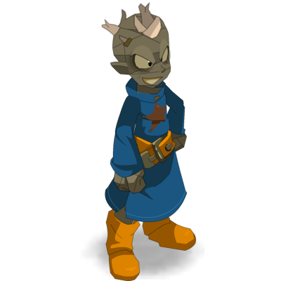
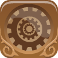
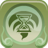
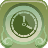
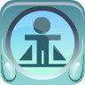

Dégâts du combo
3 193
+286 depuis le dernier essai
597 générations1 filen pause



Conditions 3 tenues sur 3
Points d'action12 / 12
Points de mouvement5 / 5
Sagesse600 / 600
Tour optimisé 10 / 10 PA
Flétrissement3 PA446

Engrenage1 PA273
Distorsion2 PA495
Pendule2 PA1 090
Gelure0 PA156Souvenir0 PA264
Perturbation1 PA285
Ralentissement1 PA181
Total du tour3 193
Autres builds trouvés une pièce à changer, ou deux
3 193porté
Build actuel
Les trois conditions sont tenues.
3 186−7
1 pièce à changer
→

Alliance Boletée à la place de la Bague de Boréale.
3 174−19
2 pièces à changer
→

Sans la panoplie Bine, une ceinture libre.
3 152−41
3 pièces à changer
→

Si le verrou de la cape saute.
Où investir
+1 % dommages sorts+78
+1 % dommages mêlée+78
+10 puissance+76
+1 % dommages finaux+71
+1 dommages+26
+10 agilité+21